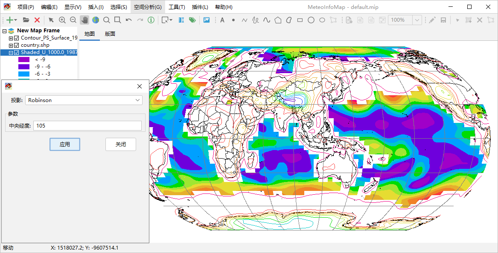

地图投影¶
通过“显示 -> 投影”菜单可以调出地图投影设置对话框，通过设置投影类型和相关的参数可以实时改变地图的投影方式。MeteoInfo通过 Proj4J库（https://github.com/locationtech/proj4j）支持大多数地图投影类型，但在这个投影设置对话框中只包含了气象领 域常用的一些投影类型，包括：

等经纬度投影（LongLat）
兰伯特投影（Lambert_Conformal_Conic）
阿尔伯斯等积投影（Albers_Equal_Area）
北极极射赤平投影（North_Polar_Stereographic_Azimuthal）
南极极射赤平投影（South_Polar_Stereographic_Azimuthal）
墨卡托投影（Metcator）
罗宾逊投影（Robinson）
莫尔维德投影（Mollweide）
正射投影（Orthographic_Azimuthal）
对地静止卫星投影（Geostationary_Satellite）
斜立体投影（Oblique_Stereographic_Alternative）
横轴墨卡托投影（Transverse_Mercator）
正弦投影（Sinusoidal）
圆柱等积投影（Cylindrical_Equal_Area）
哈默埃克特投影（Hammer_Eckert）